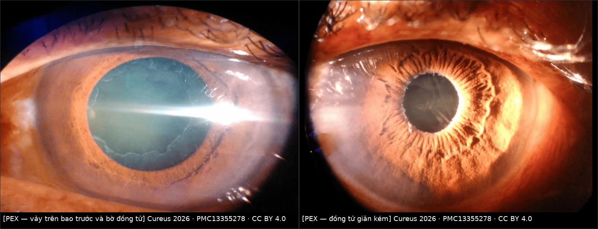
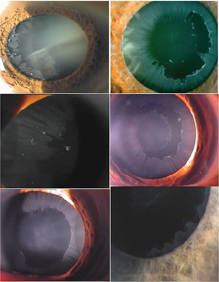
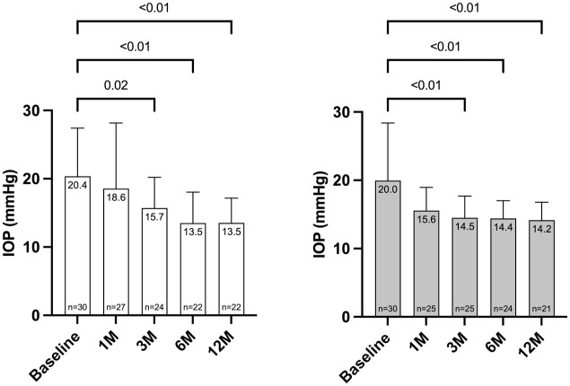
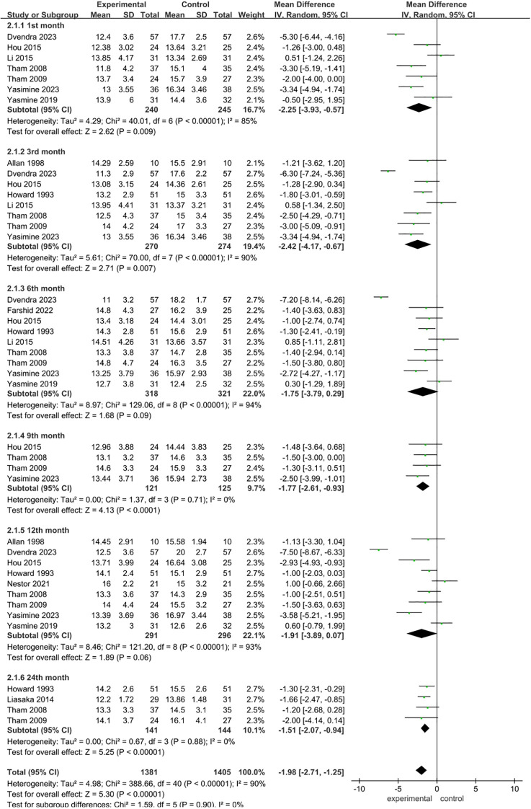
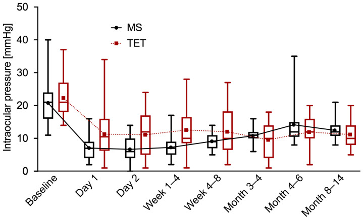

3223 — Phaco ở mắt PEX có glôcôm: phaco đơn thuần, phaco + MIGS hay phaco + trabeculectomy / Cataract surgery in pseudoexfoliation glaucoma
Tags: pattern:bong-vay-bao-truoc pattern:goc-tien-phong-tang-sac-to pattern:dong-tu-gian-kem pattern:iop-khong-dat-dich vung:mat vung:tien-phong vung:goc-tien-phong vung:the-thuy-tinh protocol:gonioscopy protocol:AS-OCT protocol:UBM protocol:OCT-RNFL score:khong incidentaloma:khong
Mức chắc chắn (certainty): tổng hợp y văn (literature synthesis) — dựng từ 1 phân tích gộp 14 RCT về phaco + phẫu thuật lọc góc so với phaco đơn thuần (Front Ophthalmol 2026, PMC13283822, CC BY 4.0), 1 phân tích gộp 14 nghiên cứu / 624 mắt về goniotomy và GATT trong glôcôm bong vảy (Front Med 2026, PMC13013039, CC BY 4.0), 1 Cochrane 2026 về MIGS bè củng mạc (PMC13386461), 1 đoàn hệ IRIS 28.196 + 28.196 mắt (Ophthalmology 2026, DOI 10.1016/j.ophtha.2025.09.012), 1 đoàn hệ 485 mắt PXF (Ophthalmology 2026, DOI 10.1016/j.ophtha.2026.04.010), các so sánh trực tiếp trong PEXG: KDB so với hút bè 30 + 30 mắt (Ther Adv Ophthalmol 2026, PMC12775301, CC BY 4.0), Hydrus 25 mắt PXG so với 49 mắt POAG (J Clin Med 2026, PMC13607743, CC BY 4.0), Preserflo so với trabeculectomy 31 + 29 mắt (J Clin Med 2023, PMC10141576, CC BY 4.0), GATT so với trabeculectomy ở PEXG nặng 31 + 31 mắt (DOI 10.1007/s00417-023-06246-3), trabeculectomy so với phacotrabeculectomy 96 PEXG + 114 POAG (DOI 10.1007/s10792-021-02169-2). Nhóm không có bệnh nhân của mình; chỗ chưa đủ chắc ghi "chưa rõ". Không ghi tên tác giả — attribution = tạp chí + năm + PMCID/DOI.
Câu chốt: PEXG không phải POAG nặng hơn — đây là hỏng cấu trúc bè củng mạc do vật liệu bong vảy, nên phaco đơn thuần chỉ hạ được vài mmHg, MIGS hạ thêm nhưng dừng ở trung bình 13–15 mmHg, còn đích ≤ 12 mmHg vẫn cần lọc. Bốn nhóm số phải thuộc: (1) phaco đơn thuần ở mắt PXF hạ 4,5 mmHg so với 2,35 mmHg ở chứng (PMC8101166) và 3 mmHg trong đoàn hệ 485 mắt (DOI 10.1016/j.ophtha.2026.04.010); (2) phaco + lọc góc hơn phaco đơn thuần 1,98 mmHg và 0,69 thuốc, nhưng biến chứng RR 2,66 (PMC13283822); (3) trong PEXG, KDB hạ 6,9 mmHg so với hút bè 5,8 mmHg, đổi lại mổ lại 13,3% so với 6,7% (PMC12775301); (4) Preserflo và trabeculectomy tương đương ở PEXG (thành công hoàn toàn 83,9% so với 82,8%), nhưng thành công với đích < 12 mmHg của GATT chỉ 82,5% so với 92,0% của trabeculectomy (DOI 10.1007/s00417-023-06246-3). Bẫy chết người: đặt đích theo thói quen "phaco + MIGS cho mọi ca" — ở PEXG tiến triển nhanh, IOP 15 mmHg vẫn là thất bại.
1. Tổng quan bệnh học – cơ chế hình ảnh (TẠI SAO)
1.1 Vì sao PEXG khác POAG — chỗ hỏng nằm ở bè củng mạc, không chỉ ở áp lực
- PEX là bệnh lắng đọng vật liệu ngoại bào toàn thân, gặp ở 60–70 triệu người, khoảng 1/3 phát triển glôcôm (PMC13466095). Đây là nguyên nhân glôcôm thứ phát thường gặp nhất trên thế giới (PMC8101166).
- Trong PEXG, bè củng mạc (trabecular meshwork) bị hai tầng tổn thương: tắc cơ học do vật liệu fibrillar bám vào khe bè, và loạn dưỡng chất nền ngoại bào làm bè xơ hóa, mất đàn hồi; kèm thiếu máu cục bộ/ stress oxy hóa (PMC13466095). Vì vậy IOP thường cao hơn và bệnh nặng hơn POAG cùng mức tổn thương thị trường (PMC13466095).
- Hệ quả không đối xứng với POAG: trên 485 mắt PXF, tỉ lệ mới mắc glôcôm thị trường 26,5% trong 4 năm ở mắt không tăng nhãn áp và 37,5% ở mắt có tăng nhãn áp; 87,3% mắt cuối cùng có glôcôm không từng ghi nhận tăng nhãn áp ở bất kỳ lần khám nào (DOI 10.1016/j.ophtha.2026.04.010). Nghĩa là một IOP 16 mmHg không loại trừ glôcôm — phải đọc thị trường và OCT.
- Trên 28.196 mắt PXG so với 28.196 mắt POAG (IRIS): tỉ lệ tích lũy phải mổ glôcôm sau 4 năm 13,6% so với 8,6%; trong số ca mổ đầu tiên, lọc (trabeculectomy/ống dẫn lưu) chiếm 51,2% ở PXG so với 39,0% ở POAG, còn stent bè 31,3% so với 44,5% (DOI 10.1016/j.ophtha.2025.09.012). Tức là thực hành thế giới đã nghiêng về lọc ở PXG, không phải vì "PEX khó" mà vì đích áp lực thấp hơn.
1.2 Phaco làm hạ IOP bao nhiêu — và vì sao ở PEX lại hạ nhiều hơn
- Cơ chế: lấy thể thủy tinh làm sâu tiền phòng, mở rộng góc, cuốn trôi vật liệu PEX và sắc tố khỏi bè, và tăng khả năng thoát thủy dịch (outflow facility); trên AS-OCT/Scheimpflug, góc mở thêm 13,83° ở PXS so với 10,47° ở chứng (p = 0,039) (PMC8784454 — chỉ đọc số liệu, không dùng ảnh).
- Định lượng: ở mắt PXF, phaco hạ IOP từ 14,70 xuống 10,20 mmHg (−4,50), so với 12,87 xuống 10,51 mmHg (−2,35) ở chứng; mức hạ tương quan với IOP trước mổ (r = 0,84) (PMC8101166). Trong đoàn hệ 485 mắt PXF, lấy thể thủy tinh đơn thuần hạ từ 15,8 xuống 12,9 mmHg (−3,0) sau 1 năm, thuốc 0,40 → 0,28 (DOI 10.1016/j.ophtha.2026.04.010).
- Vì sao không đủ: hạ 3–4,5 mmHg chỉ có nghĩa khi đích áp lực trung bình 15–18 mmHg và thuốc ít. Ở mắt đã có tổn thương thị trường tiến triển, mức hạ này không đưa được IOP xuống ≤ 12 mmHg — ngưỡng mà các tổng quan gọi là "low teens or lower" và khuyến cáo chuyển sang lọc (PMC13413391).
- Cái giá: PEX làm tăng IOP ≥ 22 mmHg sau phaco RR 1,6 (1,1–2,3) và trật IOL cần mổ lại RR 7,3 (4,4–12,2) (PMC12935656, dẫn qua bài 1512). Vì vậy "phaco đơn thuần" ở PEX không phải lựa chọn trung tính — vẫn phải theo dõi IOP và bao.
1.3 Vì sao MIGS hợp lý — nhưng vì sao không thay được lọc
- Hợp lý về cơ chế: nếu IOP tăng do tắc bè + vật liệu PEX, thì cắt bỏ/bắc cầu vùng bè (goniotomy, GATT, stent bè) đúng chỗ. Số liệu PEXG xác nhận: KDB + phaco hạ 6,9 mmHg (33,8%), thuốc 2,0 → 1,0; hút bè + phaco hạ 5,8 mmHg (28%), thuốc 2,0 → 1,4 (PMC12775301). Hydrus + phaco ở PXG hạ 19,2 → 14,6 mmHg (−4,6) và −1,09 thuốc, không khác POAG (PMC13607743).
- Giới hạn 1 — đường ra xa: cả bè đã thoái hóa lẫn thành Schlemm bị xơ (PMC12775301 bàn luận), nên sau khi mở bè, áp lực vẫn bị chặn ở đường ra tĩnh mạch. Hệ quả: MIGS trong PEXG thường dừng ở 13–15 mmHg, hiếm khi đạt ≤ 12 mmHg (PMC13413391).
- Giới hạn 2 — hiệu quả không bền: gộp 14 nghiên cứu / 624 mắt XFG, GATT ± phaco chỉ hạ 2,07 mmHg ở 12 tháng, giảm 2,54 thuốc; goniotomy + phaco hạ 2,13 mmHg, giảm 0,96 thuốc; GATT đơn thuần không duy trì được hạ áp ở 6 và 12 tháng (p > 0,05) (PMC13013039). Cochrane 2026 (10 RCT, 639 mắt) xếp bằng chứng thấp/rất thấp: so với phaco đơn thuần, MIGS bè củng mạc có thể tăng số mắt không cần thuốc ngắn hạn nhưng không còn khác biệt ở trung hạn, và tăng nguy cơ chảy máu RR 13,42 (PMC13386461).
- Giới hạn 3 — biến chứng tại chỗ: trong 624 mắt XFG, xuất huyết tiền phòng 47,6% và tăng IOP thoáng qua 17,0% (PMC13013039). Đây là lý do phải hẹn khám sớm và không đọc nhầm máu tiền phòng là "biến chứng nặng" — nhưng cũng không được bỏ qua vì nó che tầm nhìn hậu phẫu.
1.4 Vì sao trabeculectomy vẫn là chuẩn khi cần đích thấp
- Hiệu quả: trong PEXG, Preserflo hạ 20,8 → 12,4 mmHg (thành công hoàn toàn 83,9%, có điều kiện 90,3%); trabeculectomy hạ 22,3 → 11,1 mmHg (hoàn toàn 82,8%, có điều kiện 93,1%); thuốc về 0,2 so với 0,3 (PMC10141576). Nghĩa là cả hai đều đưa được IOP về 11–12 mmHg, điều MIGS bè không làm được.
- So với MIGS ở bệnh nặng: trong PEXG nặng, GATT và trabeculectomy giảm IOP 53,1% so với 53,0% (p = 0,98), nhưng thành công với đích < 12 mmHg là 82,5% so với 92,0% (p = 0,035) (DOI 10.1007/s00417-023-06246-3). Đây là con số quyết định: cùng mức giảm phần trăm, nhưng xác suất đạt đích thấp khác nhau.
- Phacotrabeculectomy không tệ hơn trabeculectomy: 96 mắt PEXG và 114 mắt POAG, theo dõi tới 9 năm, thành công và biến chứng không khác giữa hai bệnh và giữa hai kiểu mổ (DOI 10.1007/s10792-021-02169-2). Vì vậy không cần mổ hai thì chỉ vì "sợ phối hợp nặng hơn" — nhưng phải chấp nhận theo dõi bọng lọc sát và nguy cơ hạ nhãn áp.
- Đánh đổi: phaco + lọc góc hơn phaco đơn thuần 1,98 mmHg và 0,69 thuốc, nhưng biến chứng RR 2,66 (1,82–3,89); thị lực sớm kém hơn 0,07 logMAR ở nhóm không dùng MMC (PMC13283822). Tức là lợi ích áp lực phải trả bằng biến chứng — chỉ đáng khi đích thấp.
1.5 Con số phải nhớ (ngưỡng định lượng)
| Biến số | Số liệu | Nguồn |
|---|---|---|
| PEX toàn cầu | 60–70 triệu người; ~1/3 glôcôm | PMC13466095 |
| PXF → glôcôm thị trường 4 năm | 26,5% không tăng nhãn áp; 37,5% có tăng nhãn áp; 87,3% ca glôcôm không từng ghi nhận IOP cao | DOI 10.1016/j.ophtha.2026.04.010 |
| PXG phải mổ glôcôm sau 4 năm | 13,6% so với 8,6% POAG; lọc là mổ đầu tiên 51,2% so với 39,0% | DOI 10.1016/j.ophtha.2025.09.012 |
| Phaco đơn thuần ở PXF | −4,50 mmHg (PXF) so với −2,35 (chứng); −3,0 mmHg trong đoàn hệ 485 mắt | PMC8101166; DOI 10.1016/j.ophtha.2026.04.010 |
| Phaco + lọc góc so với phaco | IOP −1,98 mmHg; thuốc −0,69; biến chứng RR 2,66 | PMC13283822 |
| KDB + phaco so với hút bè + phaco ở PEXG | −6,9 so với −5,8 mmHg; thành công hoàn toàn 30,8% so với 12,2%; mổ lại 13,3% so với 6,7% | PMC12775301 |
| GATT/goniotomy trong XFG (624 mắt) | GATT ± phaco −2,07 mmHg, −2,54 thuốc ở 12 tháng; xuất huyết tiền phòng 47,6%, tăng IOP 17,0% | PMC13013039 |
| Hydrus + phaco ở PXG | 19,2 → 14,6 mmHg; −1,09 thuốc (không khác POAG) | PMC13607743 |
| Preserflo so với trabeculectomy ở PEXG | 20,8 → 12,4 so với 22,3 → 11,1 mmHg; hoàn toàn 83,9% so với 82,8% | PMC10141576 |
| GATT so với trabeculectomy ở PEXG nặng | Giảm 53,1% so với 53,0%; thành công < 12 mmHg: 82,5% so với 92,0% (p = 0,035) | DOI 10.1007/s00417-023-06246-3 |
| Trabeculectomy/phacotrabeculectomy ở PEXG | 96 PEXG + 114 POAG, tới 9 năm: thành công và biến chứng không khác | DOI 10.1007/s10792-021-02169-2 |
| PEX sau phaco | IOP ≥ 22 mmHg RR 1,6; trật IOL cần mổ lại RR 7,3 | PMC12935656 |
2. Mẫu hình + chẩn đoán phân biệt theo vị trí (gamut)
2.1 Năm biến quyết định — hỏi trước khi chọn mổ
- Đích IOP cá thể hóa: mắt còn thị lực trung tâm, tổn thương ngoại vi → có thể chấp nhận trung bình 15 mmHg; tổn thương đe dọa điểm cố định hoặc tiến triển nhanh → cần ≤ 12 mmHg (PMC13413391).
- Giai đoạn glôcôm: OCT RNFL/GCC + thị trường 24-2; ghi tốc độ tiến triển (dB/năm) chứ không chỉ MD.
- Gánh nặng thuốc và tuân thủ: ≥ 3 thuốc hoặc không nhỏ được thuốc (bề mặt nhãn cầu khô, run tay, sa sút trí tuệ) → nghiêng về can thiệp.
- Góc và bao: gonioscopy (dính góc, tăng sắc tố), đồng tử giãn kém, phacodonesis, độ dày bao trước; AS-OCT/UBM khi cần — vì PEX là bệnh của dây chằng Zinn (bài 1512).
- Tuổi thọ và mong muốn: Preserflo ít xâm lấn, hồi phục nhanh nhưng theo dõi hạ áp; trabeculectomy mạnh hơn nhưng cần khám bọng lọc nhiều lần (PMC10141576; PMC13413391).
2.2 Gamut "IOP cao + đục thể thủy tinh ở người già"
- PEXG: vảy bờ đồng tử/bao trước, đồng tử giãn kém không đối xứng, phacodonesis, góc mở nhưng tăng sắc tố bè, hai bên không đối xứng (bài 1512).
- POAG: không vảy, đồng tử giãn bình thường, góc mở, tiến triển chậm hơn.
- Glôcôm góc đóng/ phacomorphic: tiền phòng nông, góc hẹp, thể thủy tinh dày — phaco có thể là điều trị chính (bài 1452) và MIGS ở góc đóng có ngưỡng PAS riêng (bài 1985).
- Phacolytic/ lens particle: tiền phòng đục như sữa, hạt/tinh thể, góc MỞ — lấy thể thủy tinh cấp (bài 1452).
- Viêm màng bồ đào/ glôcôm do steroid: tế bào tiền phòng, tiền sử nhỏ corticoid; IOP tăng sau phaco không được mặc định là PEX tiến triển.
- Glôcôm tân mạch: rubeosis, tiền sử ĐTĐ/tắc tĩnh mạch trung tâm — không đặt MIGS bè khi chưa xử lý tân mạch.
- Glôcôm do thể thủy tinh lệch/ sa vào tiền phòng: PEX là nguyên nhân nền hay gặp, nhưng trật IOL muộn cũng tạo bệnh cảnh "IOP tăng sau mổ" (bài 1512).
2.3 Gamut "IOP không đạt đích sau phaco + đặt MIGS"
- Bít bè còn lại/ tái lắng PEX: IOP tăng dần sau 3–12 tháng, góc còn sắc tố, không có dấu viêm.
- Đáp ứng steroid: tăng IOP 2–8 tuần sau mổ, giảm khi ngừng corticoid — bắt buộc loại trừ trước khi kết luận thất bại.
- Dính góc/ PAS mới: phaco gây viêm, tyndall; gonioscopy thấy dính.
- Co bao trước/ trật IOL: capsular phimosis làm IOL lệch, gây cận thị/ loạn thị và đôi khi góc đóng; PEX là yếu tố nguy cơ (bài 1512).
- Bọng lọc xơ/ rò: sau trabeculectomy — cần needling hoặc đặt lại (bài 1992).
- Sai đích ngay từ đầu: đặt MIGS cho mắt cần ≤ 12 mmHg — đây là "thất bại do chọn phương án", không phải do kỹ thuật.
2.4 Phân tầng thực hành (không phải guideline)
| Nhóm | Đặc điểm | Lựa chọn hợp lý | Vì sao |
|---|---|---|---|
| A – Nhẹ | IOP đạt đích bằng 0–1 thuốc, thị trường/OCT ổn định, đích 15–18 mmHg | Phaco đơn thuần (hoặc phaco + MIGS nếu muốn giảm thuốc) | Phaco đã hạ 3–4,5 mmHg; thêm MIGS chỉ hơn ~2 mmHg nhưng thêm xuất huyết/ tăng IOP thoáng qua |
| B – Trung bình | 2–3 thuốc, đích 13–15 mmHg, góc nhìn rõ, không tiến triển nhanh | Phaco + MIGS (stent nếu ưu tiên ít xuất huyết; goniotomy nếu cần hạ nhiều hơn) | KDB −6,9 mmHg, Hydrus −4,6 mmHg; Cochrane: lợi ích ngắn hạn, bằng chứng thấp |
| C – Nặng/ tiến triển | Tổn thương đe dọa điểm cố định, đích ≤ 12 mmHg, ≥ 3 thuốc, tuân thủ kém | Phacotrabeculectomy + MMC hoặc Preserflo/ ống dẫn lưu | Preserflo/ trab đưa IOP về 11–12 mmHg; GATT chỉ 82,5% đạt < 12 mmHg so với 92,0% của trab |
| D – Không phù hợp lọc | Bề mặt nhãn cầu kém, không theo dõi bọng được, tuổi rất cao | Phaco + Preserflo hoặc phaco + MIGS với đích chấp nhận trung bình 15 | Preserflo 83,9% thành công hoàn toàn, ít xâm lấn hơn trab |
3. Bảng so sánh phân biệt (ma trận đối chiếu)
| Thực thể (entity) | Hình ảnh/ dữ liệu điển hình | Chốt vào (rule-in) | Chốt loại (rule-out) | Gợi ý xác nhận |
|---|---|---|---|---|
| Phaco đơn thuần | Không đặt thêm dụng cụ; IOP hậu phẫu giảm 3–4,5 mmHg, thuốc gần như không đổi | Đích 15–18 mmHg + 0–1 thuốc + không tiến triển | Đích ≤ 12 mmHg, ≥ 3 thuốc, tổn thương trung tâm → không đủ | Đo IOP 1–3–6–12 tháng, thị trường 6–12 tháng |
| Phaco + MIGS stent (Hydrus/ iStent) | Stent trong Schlemm; PXG −4,6 mmHg, −1,09 thuốc; ít xuất huyết hơn goniotomy | Đích trung bình 13–15 mmHg, góc nhìn rõ, cần giảm thuốc, ưu tiên hồi phục nhanh | Góc dính > 180°, đích ≤ 12, không thấy bè khi soi góc | Gonioscopy sau mổ, AS-OCT góc, IOP ngày 1/ tuần 1 |
| Phaco + goniotomy/ GATT (KDB, Trabectome, GATT) | Cắt/ mở bè 90–360°; PEXG −5,8 đến −6,9 mmHg; xuất huyết tiền phòng 47,6%, tăng IOP 17,0% | Đích 13–15 mmHg, cần hạ nhiều hơn stent, góc mở tốt | Đích ≤ 12, rối loạn đông/ chống đông, giác mạc đục không soi góc | Soi góc kiểm tra vị trí cắt, IOP ngày 1, siêu âm khi máu nhiều |
| Phacotrabeculectomy + MMC | Bọng lọc; PEXG 82,8% thành công hoàn toàn, 93,1% có điều kiện, IOP ~11 mmHg | Đích ≤ 12 mmHg, tổn thương đe dọa, ≥ 3 thuốc, tiến triển nhanh | Không theo dõi bọng được, bề mặt nhãn cầu nặng, nguy cơ hạ áp cao | Bọng lọc (height/ vascularity), IOP, OCT hoàng điểm tìm CME |
| Phaco + Preserflo/ ống dẫn lưu | Ống silicone; PEXG 83,9% hoàn toàn, IOP 12,4 mmHg; hạ áp sớm thường gặp | Cần đích thấp nhưng trab không phù hợp, hoặc thất bại trab trước đó | Tiền phòng nông, viêm hoạt động, glôcôm tân mạch chưa xử lý | IOP ngày 1–7, siêu âm tiền phòng, kiểm tra ống |

Trái: vật liệu bong vảy dạng sợi trên bao trước và bờ đồng tử. Phải: đồng tử giãn kém sau nhỏ thuốc giãn — dấu hiệu làm ca mổ khó và gợi ý yếu dây chằng Zinn. Nguồn: Cureus 2026 (PMC13355278), Fig. 1 và Fig. 2, CC BY 4.0; ghép letterbox bằngtools/make_composite.py, không crop/ kéo giãn.

Ba vùng kinh điển: đĩa trung tâm, vùng sạch nơi mống mắt tì vào bao, vòng ngoại vi; hình thái có thể không điển hình hoặc chỉ còn một vùng. Nguồn: Turk J Ophthalmol 2023 (PMC10442753), Fig. 5, CC BY-NC-ND 4.0 — dùng nguyên bản, không sửa.3.1 Đọc biểu đồ KDB so với hút bè — lợi ích và cái giá

*30 + 30 mắt PEXG sau ghép điểm xu hướng: KDB hạ 20,4 → 13,5 mmHg (−6,9; 33,8%), hút bè hạ 20,0 → 14,2 mmHg (−5,8; 28%) ở 12 tháng. Nhưng thành công hoàn toàn 30,8% so với 12,2% và mổ lại 13,3% so với 6,7% — KDB hạ nhiều hơn nhưng không "miễn phí". Nguồn: Ther Adv Ophthalmol 2026 (PMC12775301), Fig. 1, CC BY 4.0, nguyên bản.*3.2 Đọc forest plot phaco + lọc góc so với phaco đơn thuần

*14 RCT (bệnh nhân glôcôm nguyên phát có đục thể thủy tinh, không riêng PEX): chênh lệch IOP tổng −1,98 mmHg (CI −2,71 đến −1,25); lợi thế rõ ở tháng 1, 3, 9 và 24, không đạt ý nghĩa ở tháng 6 và 12 (I² 90–94%). Biến chứng RR 2,66. Đây là bằng chứng nền để nói "thêm lọc chỉ hơn ~2 mmHg" — và là lý do không được ngoại suy nguyên số sang PEXG nặng. Nguồn: Front Ophthalmol 2026 (PMC13283822), Fig. 4, CC BY 4.0.*3.3 Preserflo so với trabeculectomy — hai con đường đưa IOP về 11–12 mmHg

*31 mắt Preserflo và 29 mắt trabeculectomy: 20,8 → 12,4 so với 22,3 → 11,1 mmHg sau 1 năm; thành công hoàn toàn 83,9% so với 82,8%. Hạ áp sớm là biến chứng hay gặp nhất của Preserflo. Nguồn: J Clin Med 2023 (PMC10141576), Fig. 1, CC BY 4.0, nguyên bản.*4. Protocol chụp/ đánh giá + hệ phân độ và ngưỡng xử trí
4.1 Trước mổ — bộ tối thiểu
- IOP: đo ≥ 2 lần khác buổi (dao động ngày đêm ở PEXG có thể 5–8 mmHg); ghi thuốc đang dùng + số lần nhỏ.
- Góc: gonioscopy 360°, ghi dính góc (PAS), tăng sắc tố bè, màng PEX; chụp ảnh góc nếu có.
- Thị trường: Humphrey 24-2 (hoặc 10-2 nếu tổn thương trung tâm); tính tốc độ tiến triển.
- OCT: RNFL + GCC; đối chiếu với đĩa thị; PEXG có thể mỏng RNFL nhanh hơn POAG cùng IOP (PMC13466095).
- Đo sinh trắc: AL, K, độ sâu tiền phòng, độ dày thể thủy tinh; đánh giá đồng tử giãn kém, phacodonesis, bao trước; UBM khi nghi yếu dây chằng (bài 1512).
- Bề mặt nhãn cầu + nội mô giác mạc: nếu ≥ 3 thuốc hoặc khô mắt nặng → cân nhắc đổi sang can thiệp thay vì thêm thuốc.
- Đích IOP bằng văn bản: ghi rõ "đích 15" hay "đích ≤ 12" — đây là biến quyết định chọn mổ, không phải cảm tính.
4.2 Trong mổ — điểm riêng của PEX
- Đồng tử: giãn bằng cơ học (móc/ Malyugin); không tăng áp lực tưới quá mức.
- Dây chằng: nếu phacodonesis/ đứt zonule → CTR (hoặc CTS/ Cionni nếu > 180°), giảm xoay nhân, cân nhắc không đặt IOL trong bao khi bao yếu nặng (bài 1512).
- MIGS: soi góc trực tiếp trước khi cắt; KDB 90–120° đủ cho đa số; GATT khi cần 360° và góc nhìn tốt; ngừng chống đông theo phác đồ, chuẩn bị rửa tiền phòng vì xuất huyết 47,6%.
- Trabeculectomy: MMC 0,2–0,4 mg/mL trong 1–3 phút, khâu giác mạc 2–3 mũi rời, kiểm tra rò sớm; ở PEX tránh khâu quá chặt vì bao Tenon xơ.
- Preserflo: MMC 0,4 mg/mL 2–3 phút, đặt 2–3 mm sau rìa giác mạc, kiểm tra không cấn mống mắt/ thể mi.
4.3 Sau mổ — lịch theo dõi tối thiểu
| Thời điểm | Việc phải làm | Ngưỡng báo động |
|---|---|---|
| Ngày 1 | IOP, tiền phòng, máu tiền phòng, bọng lọc, ống/ stent | IOP > 30 mmHg hoặc < 5 mmHg; máu đầy tiền phòng |
| Tuần 1 | IOP, độ sâu tiền phòng, bọng lọc, đáp ứng viêm | Tiền phòng dẹt + IOP cao → nghi misdirection/ bít ống |
| Tháng 1 | IOP, thuốc, OCT hoàng điểm nếu thị lực giảm | CME, IOP tăng do steroid |
| Tháng 3–6 | IOP, thị trường, OCT RNFL, kiểm tra IOL | IOP không đạt đích, IOL lệch, co bao |
| Tháng 12 và hằng năm | IOP, thị trường, OCT, soi góc | Tiến triển thị trường dù IOP "ổn định" |
4.4 Sơ đồ quyết định
flowchart TD
A["PEX + đục thể thủy tinh + glôcôm"] --> B{"Đích IOP và giai đoạn"}
B -->|"Đích 15 đến 18, 0 đến 1 thuốc"| C["Phaco đơn thuần"]
B -->|"Đích 13 đến 15, 2 đến 3 thuốc"| D["Phaco + MIGS bè"]
B -->|"Đích 12 hoặc thấp hơn, tổn thương đe dọa"| E["Phacotrabeculectomy + MMC hoặc Preserflo"]
C --> F["Theo dõi IOP 1, 3, 6, 12 tháng"]
D --> F
E --> F
F --> G{"Đạt đích?"}
G -->|"Có"| H["Theo dõi thị trường và OCT hằng năm"]
G -->|"Không"| I["Loại trừ steroid, dính góc, co bao, trật IOL"]
I --> J["Nâng bậc: lọc hoặc ống dẫn lưu"]
5. Biến thể bình thường và cạm bẫy
- "PEX biến mất sau phaco": phaco cuốn trôi vật liệu khỏi bao và bè; mắt đã mổ không còn vảy không loại trừ PEX — soi mắt bên kia, hỏi tiền sử, xem vảy trên IOL/ mặt trước dịch kính (PMC10442753).
- Sắc tố trên nội mô giác mạc: có thể là PEX hoặc sắc tố mống mắt sau chấn thương/ viêm; phân biệt bằng vị trí (bờ đồng tử vs lan tỏa), hình dạng (vảy vs chấm), và tăng sắc tố bè khi soi góc.
- IOP tăng sau phaco: đáp ứng steroid (2–8 tuần), viscoelastic còn lại (ngày 1), máu tiền phòng gây tắc bè, PEX tiến triển. Đừng gọi tất cả là "PEX nặng lên" — thử giảm corticoid trước khi quyết định mổ lại.
- Xuất huyết tiền phòng sau goniotomy/ GATT: 47,6% — thường tự tiêu, nhưng che tầm nhìn và có thể tăng IOP; không chọc rửa trừ khi máu đầy + IOP cao kéo dài.
- Tăng IOP thoáng qua sau MIGS: 17,0%; phân biệt với thất bại thật bằng đáp ứng thuốc và xu hướng 1–3 tháng (PMC13013039).
- Yếu dây chằng không có phacodonesis: phacodonesis là dấu muộn; không có rung không loại trừ — chuẩn bị CTR và theo dõi trật IOL muộn (bài 1512).
- Một IOP bình thường không loại trừ glôcôm: 87,3% mắt PXF cuối cùng có glôcôm không từng ghi nhận tăng nhãn áp (DOI 10.1016/j.ophtha.2026.04.010). Đừng đợi IOP cao mới điều trị.
- Đích áp lực "theo thói quen": đặt MIGS cho mắt cần ≤ 12 mmHg là thất bại được lập trình; ngược lại, trabeculectomy cho mắt nhẹ, đích 18 mmHg là quá tay (PMC13413391).
6. Tự lượng giá — Blind Quiz
Ca 1 — Cụ bà 74 tuổi, đục thể thủy tinh hai bên, IOP 24 mmHg mắt phải đang dùng 1 thuốc. Nhìn ảnh trước, mô tả trước khi mở đáp án.
- Gợi ý lâm sàng: đồng tử không giãn đều sau nhỏ tropicamide/ phenylephrine; mắt trái IOP 17 mmHg.
- Câu hỏi: Dấu hiệu chính ở bờ đồng tử và bao trước? Ba chẩn đoán phân biệt? Cần làm gì trước khi quyết định chỉ phaco?
Bấm để hiện đáp án (findings + chẩn đoán)
- Dấu hiệu: vảy trắng dạng sợi ở bờ đồng tử và rải trên bao trước; đồng tử giãn kém; mắt đối bên có thể có vảy dù IOP bình thường.
- Chẩn đoán: hội chứng bong vảy bao thể thủy tinh (PEX) — vật liệu fibrillar lắng trên bao và bè, gây tắc thoát thủy dịch và yếu dây chằng Zinn (bài 1512).
- Phân biệt: IFIS (bờ tròn đều, không vảy, tiền sử α1-antagonist), dính sau (đồng tử méo, dải dính), xơ cơ thắt do tuổi/ ĐTĐ (đối xứng, không vảy).
- Việc cần làm: soi góc (PAS, sắc tố bè), thị trường 24-2 + OCT RNFL/GCC, hỏi thuốc và tuân thủ, ghi đích IOP. Nếu đích 15–18 mmHg và chưa tiến triển → phaco đơn thuần hợp lý; nếu đích ≤ 12 mmHg → phacotrabeculectomy/ Preserflo, không chỉ phaco.
- Nguồn ảnh: Cureus 2026 (PMC13355278), Fig. 1–2, CC BY 4.0.
Ca 2 — Cùng bệnh nhân, sau khi giãn đồng tử tối đa, thấy hình ảnh sau. Đây là hiện tượng gì và vì sao có ba vùng?
- Gợi ý: hình thái thay đổi theo mức giãn đồng tử và theo vị trí mống mắt tì vào bao.
- Câu hỏi: Mô tả ba vùng? Vì sao vùng giữa lại "sạch"? Điều này có ý nghĩa gì cho kế hoạch mổ?
Bấm để hiện đáp án (findings + chẩn đoán)
- Dấu hiệu: đĩa trung tâm (trong đồng tử), vùng sạch (nơi mống mắt tì vào bao), vòng ngoại vi (dưới mống mắt) — kinh điển của PEX.
- Cơ chế: vật liệu lắng theo dòng thủy dịch và theo vùng tiếp xúc mống mắt–bao; vùng mống mắt tì vào bao bị "lau" sạch khi đồng tử co giãn.
- Ý nghĩa: xác nhận PEX trước mổ; cảnh báo yếu zonule và đồng tử giãn kém → chuẩn bị móc đồng tử, CTR, và theo dõi trật IOL muộn (bài 1512).
- Nguồn ảnh: Turk J Ophthalmol 2023 (PMC10442753), Fig. 5, CC BY-NC-ND 4.0, nguyên bản.
Ca 3 — Hai nhóm PEXG được phaco + KDB hoặc phaco + hút bè. Nhìn biểu đồ, trả lời trước khi mở đáp án.
- Gợi ý: 30 + 30 mắt sau ghép điểm xu hướng; theo dõi 12 tháng.
- Câu hỏi: Nhóm nào hạ IOP nhiều hơn? Khác biệt có ý nghĩa thống kê không? Vì sao vẫn có thể chọn hút bè?
Bấm để hiện đáp án (findings + chẩn đoán)
- Dấu hiệu: KDB hạ 20,4 → 13,5 mmHg (−6,9; 33,8%); hút bè hạ 20,0 → 14,2 mmHg (−5,8; 28%); khác biệt IOP không có ý nghĩa (p = 0,12).
- Điểm quyết định: thành công hoàn toàn 30,8% so với 12,2%, có điều kiện 51,3% so với 32,6%; nhưng mổ lại 13,3% so với 6,7%.
- Kết luận: KDB hạ nhiều hơn và đạt thành công nhiều hơn, đổi lại nguy cơ phải mổ thêm; hút bè là lựa chọn khi ưu tiên ít xâm lấn/ ít xuất huyết, chấp nhận IOP cao hơn hoặc nhiều thuốc hơn.
- Nguồn ảnh: Ther Adv Ophthalmol 2026 (PMC12775301), Fig. 1, CC BY 4.0.
7. Câu hỏi nghiên cứu & điểm chưa đồng thuận (tính đến 11/2026)
[Tranh cãi] Ở PEXG trung bình–nặng kèm đục thể thủy tinh, phaco + MIGS bè có không thua phaco + trabeculectomy về tỉ lệ đạt đích ≤ 12 mmHg sau 24 tháng không?
- Đã biết: GATT đạt 82,5% so với trabeculectomy 92,0% ở đích < 12 mmHg trong một so sánh 31 + 31 mắt PEXG nặng; Cochrane 2026 xếp bằng chứng MIGS bè là thấp/ rất thấp, không có RCT riêng cho PEX.
- Chưa rõ: thiếu RCT ở PEXG so sánh trực tiếp MIGS với lọc; các phân tích gộp PEX chủ yếu là nghiên cứu quan sát, hơn 60% số mắt từ Thổ Nhĩ Kỳ.
- Hướng nghiên cứu: RCT đa trung tâm ở PEXG, outcome tỉ lệ đạt đích ≤ 12 mmHg, số thuốc, mổ lại, tiến triển thị trường ở 24 tháng.
- Nguồn: DOI 10.1007/s00417-023-06246-3 (2024); PMC13386461 (2026); PMC13013039 (2026).
[Tranh cãi] PEX có thật sự làm giảm tỉ lệ thành công của trabeculectomy so với POAG không?
- Đã biết: một so sánh 96 PEXG + 114 POAG theo dõi tới 9 năm không thấy khác biệt về thành công/ biến chứng; nhưng nghiên cứu Preserflo dẫn lại rằng thành công trab ở PEXG thấp hơn POAG, và IRIS cho thấy PXG mổ lại nhiều hơn (10,8% so với 7,9%).
- Chưa rõ: khác biệt có thể do mức IOP trước mổ, thời gian theo dõi, tiêu chí thành công và kinh nghiệm phẫu thuật, chứ không phải bản chất PEX.
- Hướng nghiên cứu: phân tích gộp có điều chỉnh IOP nền và tiêu chí thành công, hoặc registry có propensity score cho PEXG vs POAG sau trab.
- Nguồn: DOI 10.1007/s10792-021-02169-2 (2022); PMC10141576 (2023); DOI 10.1016/j.ophtha.2025.09.012 (2026).
[Khác biệt thực hành] Khi nào phaco đơn thuần là đủ ở PEXG — và ngưỡng nào buộc phải thêm lọc?
- Đã biết: lấy thể thủy tinh đơn thuần hạ 3,0–4,5 mmHg; phaco + lọc góc chỉ hơn 1,98 mmHg nhưng biến chứng RR 2,66; tổng quan 2026 khuyến cáo lọc khi cần "low teens or lower", đặc biệt có tổn thương đe dọa điểm cố định.
- Chưa rõ: chưa có ngưỡng IOP/ MD/ tốc độ tiến triển được ngoại kiểm để quyết định "phaco đủ" hay "phải lọc"; thực hành khác nhau rất nhiều giữa các trung tâm.
- Hướng nghiên cứu: nghiên cứu quyết định (decision analysis) và registry theo đích IOP ghi trước mổ, so sánh tỉ lệ đạt đích thay vì chỉ IOP trung bình.
- Nguồn: DOI 10.1016/j.ophtha.2026.04.010 (2026); PMC13283822 (2026); PMC13413391 (2026).
2–3 mục; mỗi mục bắt buộc có Nguồn (PMCID/DOI). Không đặt ngân sách thời gian cứng; không bịa tranh cãi.
Bài liên quan chéo
- 1512 – PEX trước phaco: vảy bao trước, phacodonesis, đứt dây chằng, CTR và trật IOL muộn
- 1508 – IFIS: đồng tử nhỏ do α1-antagonist, phân biệt với PEX
- 1452 – Glôcôm do thể thủy tinh chưa mổ: phacolytic, lens particle
- 1448 – Glôcôm ác tính sau mổ nội nhãn: tiền phòng dẹt, IOP cao
- 1985 – MIGS ở glôcôm góc đóng: ngưỡng PAS và giới hạn của phaco + MIGS
- 1935 – Đục thể thủy tinh sau MIGS
- 1983 – Đục thể thủy tinh sau trabeculectomy
- 1992 – Needling bọng lọc sau trabeculectomy
- 442 – OCT trong glôcôm: RNFL/GCC
- 400 – Tổng quan Mắt & thị giác
Ảnh
- Tên file:
3223_pex-glaucoma_<Modality>_<SourceID>.jpg; nguồn + giấy phép từng ảnh trongimages/CREDITS.md. - Ảnh CC BY-NC-ND (PMC10442753) dùng nguyên bản, không crop/ ghép/ đổi màu.
- Composite chỉ ghép 2 ảnh CC BY 4.0 (PMC13355278) bằng
tools/make_composite.py.
Không dùng để chẩn đoán độc lập khi chưa có người hướng dẫn.